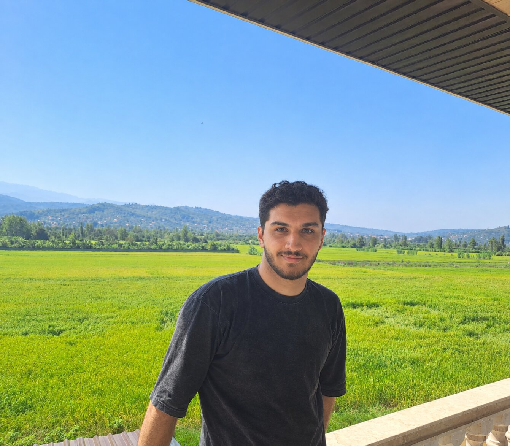

Ilya Khalafi
AI Engineer
I build and ship LLM systems end to end. My work includes hybrid retrieval over millions of chunks, knowledge graph extraction, agentic workflows over enterprise data, and post-training open-weight models on multi-GPU clusters.
My foundation is in machine learning and theory, and my goal is to apply that knowledge in practice. I see theory as the bones and practice as the flesh. Theory gives my work structure, while practice brings it to life.
Currently pursuing an MSc in Data Science
at the University of Tehran ↗
at the University of Tehran ↗
FOCUS AREAS
LLM Post-TrainingRAG & Hybrid SearchKnowledge GraphsAgentic SystemsData EngineeringDistributed Systems